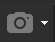
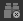
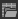
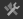

Раздел 10 Обработка данных в Agisoft Metashape
10.1 Программное обеспечение
Agisoft Metashape – отечественное коммерческое фотограмметрическое ПО, использующее технологии компьютерного зрения. Домашний адрес со всей информацией о программе доступен по ссылке, в том числе руководство пользователя на русском и английском языках.
10.2 Исходные данные
В качестве исходных данных в этой справке приведены снимки, полученные с БПЛА DJI Phantom 4 и опорные точки, измеренные с помощью высокоточного ГНСС.
10.3 Интерфейс
Интерфейс программы состоит из основного окна 3D-вьюера, окна Workspace слева, куда добавляются блоки (Chunk) фотографий (Cameras). Другие окна показывают фотографии блока, свойства слоёв, информацию о привязке, маркеры и другие. С полным перечнем окон и панелей можно ознакомиться, щёлкнув правой кнопкой мыши по пустому месту сверху – там можно включить или выключить окно/панель.
Настройки программы доступны через меню Tools – Preferences. Убедитесь в том, что ресурсы видеокарты используются для вычислений.
Добавить фотографии можно, щёлкнув правой кнопкой по Chunk и вызвав меню Add – Add Photos… или Add – Add Folder…. Фотографии добавятся в окно блока и в окно с превью. Если в EXIF фотографий присутствуют геотеги, то соответствующие строчки появятся в окне Reference. При добавлении фотографий с БПЛА могут присутствовать углы ориентирования, как минимум рысканье (Yaw).
При наличии геотегов добавленных фотографий их центры проекций будут схематично показываться и подписывать в окне 3D-вьюера. Кнопка Show Basemap включает и выключает подложку базовой карты, кнопка Show Cameras  включает и выключает показ центров проекций снимков.
Перемещать вид в окне 3D-вьюера можно зажатой левой кнопкой мыши, меняется масштаб с помощью колёсика мыши, поворачивается вид с помощью зажатого колёсика мыши.
Всё содержимое окна программы может быть сохранено в проект формата PSX.
10.4 Взаимное ориентирование снимков
Вызовите меню Workflow – Align Photos. В открывшемся окне будут доступны настройки:
Accuracy – точность, определяемая разрешением используемого уровня дискретизации. Значение High соответствует исходному разрешению снимков, каждый последующий уровень точности приводит к увеличению размера пикселя в 4 раза, соответственно время обработки данных с менее высокой точностью будет уменьшаться;
Generic preselection – использование изображений с худшим разрешением (пирамидальные слои) для предварительного отождествления соответственных точек на снимке;
Reference preselection – использование геотегов из EXIF фотографий для их предварительного ориентирования;
Reset current alignment – сброс текущих параметров ориентирования снимков;
Key point limit – лимит нахождения ключевых точек на снимке. Рекомендуется использовать значение 40 000, а значение 0 означает отсутствие лимита;
Tie point limit – лимит нахождения связующих точек на снимке. Рекомендуется использовать значение 4 000, а значение 0 означает отсутствие лимита;
Adaptive camera model fitting – при уравнивании связок проектирующих лучей происходит самокалибровка камеры.
По завершении операции вы получаете облако связующих точек (Tie Points) или разреженное облако точек.
Все обнаруженные отождествления ключевых точек для каждой пары снимков можно найти в меню Tools – Tie Points – View Matches….
Параметры калибровки камеры после взаимного ориентирования меняются. С ними можно ознакомиться через меню Tools – Camera calibration…. График распределения дистории (Distortion plot) можно вызвать, щёлкнув правой кнопкой мыши по модели камеры.
10.5 Расстановка опорных точек
Опорные точки можно расставить вручную, если правой кнопкой мыши щёлкнуть по облаку точек в нужном месте и из выпадающего меню выбрать Add Marker. Соответствующая строчка с маркером появится в окне Reference, а в окне Photos на фотографиях, куда попадает маркер, появится синий флаг. При установке проекции маркера на конкретной фотографии флаг станет зелёным.
Если правой кнопкой мыши вызвать выпадающее меню в точке разреженного облака точек и выбрать пункт Filter Photos by point, перечень фотографий в окне Photos сократится. Для сброса фильтра нажмите на кнопку  на панели окна Photos.
Если данные по опорным точкам сведены в текстовый файл с разделителем, его можно добавить, нажав на кнопку Import Reference . Откроется окно, где вам будет предложено установить символ разделителя, расставить в нужном порядке колонки и указать, с какой строчки необходимо начать считывать данные.
В окне Reference нажмите на Settings , убедитесь в правильности установленных систем координат для модели, фотографий и маркеров (они могут быть разные). Установите точности для координат центров проекций и координат расставляемых маркеров.
Установите маркеры на фотографиях, где присутствуют опознаки. Для этого откройте одну из фотографий в окне Photos, в точке опознака щёлкните правой кнопкой мыши и выберите пункт Place Marker и выберите нужный маркер из имеющихся. После установке хотя бы двух проекций программа начнёт подсказывать, на каких фотографиях присутствуют маркеры с помощью символа серого флага . Для хорошего результата необходимо, чтобы каждый маркер имел не менее четырёх проекций, а сами проекции не были установлены в области пониженной резкости изображения или совсем на краю снимка.
Нажмите на кнопку Optimize  для калибровки элементов внутреннего и внешнего ориентирования камеры, а также параметров дисторсии.
для калибровки элементов внутреннего и внешнего ориентирования камеры, а также параметров дисторсии.
10.6 Построение плотного облака точек
В главном меню вызовите Workflow – Build Dense Cloud…. После окончания работы инструмента в окне Workspace появятся слои карт глубины (Depth Maps) и плотное облако точек (Dense Cloud).
10.7 Построение ЦМП и фотомозаики
Для построения цифровой модели поверхности на основе плотного облака точек в главном меню вызовите Workflow – Build DEM…. Для построения фотомозаики вам потребуется ЦМП, полученная на предыдущем этапе – в главном меню вызовите Workflow – Build Orthomosaic….

Обратите внимание, что каждый слой для блока может быть представлен только в одном экземпляре. Если вы запускаете процедуру с новыми параметрами, то выходной слой перезапишется. Если вы хотите получить несколько вариантов одного слоя, необходимо сдублировать блок – нажать правой кнопкой мыши по блоку и выбрать Duplicate и указать те данные, которые необходимо сдублировать.
Для экспорта слоя щёлкните правой кнопкой мыши по нему и выберите пункт Export….
| Карпачевский А.М. Основы дистанционного зондирования и фотограмметрии. М.: Географический факультет МГУ, 2023. |